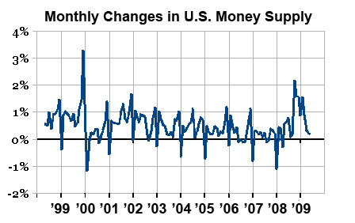
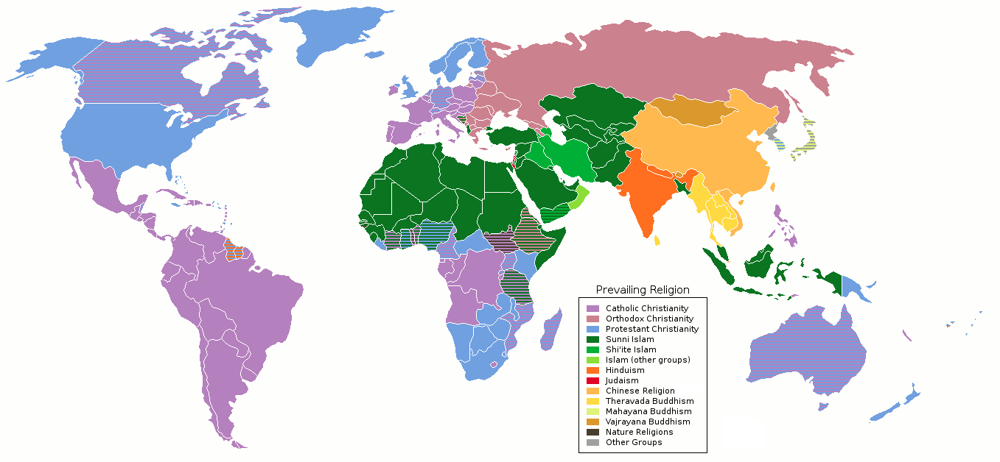

为何拒绝圣诞节？
海纳百川，有容乃大。
——林则徐，1839年
随着十二月接近尾声，圣诞节的脚步声也愈发临近。作为“耶诞日”，圣诞节在西方拥有深远的历史，且在基督教地区广为传播；后来，随着全球化进程的兴起，这一节日随之传播到世界其他地方，成为世界上最受欢迎的节日之一。最初的圣诞节，是作为基督教节日存在的，但是很明显，在今天，它已经世俗化了，并愈来愈受到来自不同文化背景的人群的接纳与欢迎。
提起圣诞节，你会想起什么？闪闪发光的灯饰、装点精美的圣诞树、从烟囱溜进家中送给你礼物的圣诞老人、拐杖糖、圣诞袜……宗教的背景给予它无限神秘与朦胧的美感，冬日的时令则为其渲染上温馨的人文气息。私以为，这种神秘感和温馨的相得益彰，这种无处不在的浪漫氛围，正是圣诞节得以流行于世界，并在各个国家的流行文化中占据一席之地的重要原因。
但在中国，事情似乎变得不太一样。原本沉浸于圣诞气氛中的居民们，很快便面临来自行政单位和“爱国人士”的压力；关于“可不可以过洋节”的争论，在互联网上激起一层又一层的风浪。在持续的宣传和谴责中，圣诞节连同其他的西方节日，成为“西方文化入侵”的打手，成为“冲击本土优秀文化”的祸源；而庆祝这些节日，则被斥为“文化不自信”，甚至是“不爱国”的表现。但是，在反对者情绪化的声音中，除了“文化自信”“爱国”“弘扬传统文化”这些空洞的字眼，我找不出任何完整的逻辑证明，能够阐述一个小小的、早已与宗教发源脱离干系的节日，是如何拥有足以撼动“延续五千年”的“中华优秀传统文化”的能力的；而且，据我所见，即使是外国文化依旧存在于流行文化之中的今天，中国的传统文化依旧没有如反对者所预言的那样，陷入被冲淡、被遗忘甚至是被取代的局面。
这种言论宣称和事实情况的矛盾究竟是怎么回事？外来节日到底有没有对本土节庆产生威胁？反对者宣称的本土文化的“式微”又是怎么一回事？接受外来的文化元素会破坏自己的文化吗？中国的“传统文化”真的是自古以来“传统”如此吗？在全球化的今天，借“保护”之名抵制外来文化的进入，是否正确、是否可能？
争执的滥觞
我在网络上找到的最早关于圣诞节争论的报道，发表于2005年。[1]本世纪初，随着中国自身国力的跃升和开放程度的提高，外国节日进入国内并广为传播，也是一件理所应当的事情。但是，一些反应却表现得非常奇怪：
- 2006年12月18日，十位哲学或教育学博士联合发表倡议书《走出文化集体无意识，挺立中国文化主体性——我们对“圣诞节”问题的看法》，号召网友慎对圣诞节。[2]
- 一哲学博士称“拒斥耶教是复兴儒学的必然命题”。[3]
- 有人评论，圣诞节的流行会导致中国文化的沦陷。[4]
- 2014年12月24日，西北大学现代学院封校禁止学生过平安夜。[5]
- ……
以上是一些旧闻。近几年的事件，相信来自大陆的读者们应该都有所耳闻，不再赘述。这里记录这些旧闻的原因，是证明早在21世纪初，就已经出现了抵制圣诞节的现象。彼时圣诞节的受欢迎程度，从当年的新闻中可见一斑。
圣诞节在中国的传播可以追溯到明清时期传教士的在华活动。民国时期圣诞节就已经开始流行。黄濬《花随人圣庵摭忆》中有记载：“昔之风俗，冬至日献袜履于舅姑，今日但知有圣诞节，不知有冬至，但知有圣诞老人赠儿童玩具之袜，乃至新妇多不愿有舅姑，遑知有献袜乎？”[6]:1 [7]:265
应该承认，黄濬对时人庆祝圣诞的批评，比今日的大多数批评者要高明的多。首先，黄濬说明了中国冬至存在“献袜履”的传统，再陈述社会对传统习俗的淡忘甚至排斥，最后才提出自己的批驳。在他的表述中，我们可以非常清晰地发现其重点在于对传统习俗的丧失感到悲痛，在其“但知”“不知”的用词上，并没有表达对圣诞节本身的反对：也就是说，黄的诘问，目的在于唤醒时人对本土文化的重视。今人的批评，动辄以捕风捉影的“外部势力”“文化入侵”“洗脑”等阴谋论下断言，这是对自己内心的文化保守主义的表白，不过是借一层“中华传统”的壳作掩护而已，相较于民国时人，又进步在哪里？
崇洋媚外？文化入侵？
在如今中国大陆的互联网环境中，凡是涉及文化、政治的热点话题，背后都有“资本”在捣鬼。而这一话术是典型的阶级斗争时期的宣传。糟糕的事件，背后的推手永远都是万恶的资本，或者亡我之心不死的外国势力。但是，稍微从阶级斗争的激情中冷却下来，一些刺眼的问题就摆上了桌面：
哪个资本？它是怎么作祟的？哪股势力？他们为什么非要和我们作对？
各类外国节日，作为流行文化的元素，的确充斥着商业化气息；但是，这些商业活动完全合理合法，反对者又缘何抨击它们？出于商业利益的需要对这些节日展开营销活动，也属于非常合情合理的行为，其为社会创造的商业价值不可小觑，那么，所谓的资本“万恶”体现在何处？

来自美国人口调查局的数据显示，在2004年十一月到同年十二月期间，在全国百货商场的消费从208亿美元上升到319亿，上涨了54个百分点。在其他行业，圣诞节前的消费增长更甚，十一月到十二月的购物热潮中，书店消费增长了100个百分点，珠宝店消费则有170个百分点。同年，圣诞节前的两个月里，美国零售业就业人数从160万增长到180万。[8]我们没有理由认为，圣诞节对社会经济活动的促进作用不会发生在中国。
至于所谓的“外部势力”，恐怕要追溯到古代的来华传教士身上。但这里又出现了一个问题：佛教可以传入中国，鉴真法师又可以把它传到日本，那怎么基督教就不可以传入中国了呢？目光放到现代，也找不到所谓支持文化入侵的外国敌对势力。最常见的言论，全部都是断言式的宣称，而非实例举证，这恰恰表明这一说法是捕风捉影。
有趣的地方是，声称过洋节属于崇洋媚外者的人，却忽视了自己生活中其他更加普遍、早已渗透至各个角落的舶来文化。或者说，现代社会绝大多数的生产生活要素都发源于西方，因为工业化和城市化就是起源于西方的；民主、科学等理念也发源西方；儿童节、劳动节等等也属于舶来品；汉语中许多词汇则是借自日语……诸如此类，不胜枚举。但是（至少我所见的）所有斥责他人“崇洋媚外”的人，从未对这类反驳进行回击。
首先应当明确的是，圣诞节等节日在中国的流行文化中能够成功占据一席之地，反而是中国自身节日架构的特点——或者说缺陷导致，而不是有些人声称的外国文化“入侵”。中国传统文化基于先赋性的社会关系，即一个人出生时自动产生的、不受个人控制的血缘关系和在生产生活中形成的地缘关系，这些社会关系是社会先天施加给个人的，并不受个人把控。现代官方节日则多为政治性节日。[6]:7无论是传统节日还是现代国家节日，都缺失了对个体的人文关注，缺失了为后天形成的社交关系提供互动的平台。然而，显然在城市化的进程中，人是逐渐与原生血缘关系（特别是“大家族”，即包含祖辈与旁支的血缘综合体）疏离的，在迁徙过程中，打碎了先天的差序格局，这些现象使得传统的先赋性关系逐渐缩水与解离，重要性迅速下降；相反，在社会原子化进程中，后天形成的社会关系，如朋友、网友、恋人等，则在人们的日常生活中占据非常重要的位置。从城乡人口比例来看，多数人口所处的社会关系格局已经从乡村的差序格局转移至城市的“小区格局”和网络[9]，关系网不仅在时空上获得了极大的可延展性，在互动上还具有了前所未有的平等性。这对于古代社会来说是不可想象的，对于发源于古代的节日框架来说同样是不可想象的。
令人匪夷所思的是，即使是现代的节日框架也没有填补“个人关怀”的空缺，换言之，节日从来都只是为了维护某种既有的关系，如宗族关系、个人与国家的关系，并不愿屈尊俯就照顾个人以及个人与个人之间的自发连结。而在人际关系原子化的当下，民众显然需要新的平台、新的名义，来重构人作为自由个体的联系与共感。
外来者的威胁？
另外一些提倡拒斥圣诞节的人则使用了看似更加合理的理由：圣诞节是基督教文化节日，圣诞节的狂热会导致宗教对中国社会产生不好的影响。[2] [3] [10]（“不好的影响”还是我美化后的词语。）由于后面的驳论皆以此为靶，为了防止出现“稻草人谬误”，我在此引用了三处来源，来证明此类话术确实存在且具有代表性。
但是，细究事实就能发现，这句话建立在完全悬空的预设之上：
- 圣诞节至今仍具有极其强烈的宗教含义；
- 圣诞节在国内的传播已被证明具有传教作用；
- 宗教是有害的，或至少对中国是有害的。
我们来逐条反击。
宗教起源不意味着永远都从属宗教
对于第一条，我们可以直接从民意数据来反驳。
皮尤研究中心在2017年的一项调查显示，有56%的民众认为，圣诞节的宗教色彩较以前减少，占调查样本总量39%的民众认为宗教色彩淡化对自己造成的困扰不大或没有。[11]日常生活和商业领域，越来越多地使用更加中性的“Happy Holiday”来适应日益多元化的社会信仰。[10] [11]美国尚且如此，在缺乏相应宗教文化根基的中国，圣诞节的世俗化只会更甚。纵观圣诞节期间中国人的活动，很少见到存在“上帝”的信仰基础；即使是市民前往教堂等宗教场所，也不能证明他们皈依基督教，因为（一）中国式的信仰是实用主义的信仰，换言之，这种类宗教行为和在各种庙里祈福在本质上没有区别，（二）或者也有可能仅仅是出于异质文化吸引所产生的猎奇心理的因素。
本土化和重构
圣诞节的前一天，在中国被称为“平安夜”。然而，在平安夜赠送苹果象征平安的习惯，并非源自外国。[12]以“平”“苹”谐音寓意，是中国文化语境下产生的特色，是圣诞节等外国节日在中国“本土化”的一个缩影。圣诞节当天的各种庆祝活动亦然。在美国人一家人团聚吃火鸡、做礼拜时，中国人同友人欢聚、逛街购物，这种截然不同的差异表明，在中国流行的圣诞节已经不同于其原生意义。[6]:7 [13]:3
宗教影响社会
反对者口中的“宗教”，不如说是特指“基督教”，因为，一旦涉及佛教、道教和民间信仰，他们就又不吱声了，或者说没有面对圣诞节时那般聒噪。这种“双标”行为，我们在先前的分析中已经发现了太多，而且，（至少我）从未见过有人给出反驳，证明自己“不双标”。
这类思潮的产生根源于执政党长期的排外性与唯一性的意识形态。在这种情况下，不同的信仰——哪怕是本土信仰——必然会遭到排挤。例如，作为民间传统信仰的最显著表现形态，农历新年在辛亥革命至文化大革命期间遭遇了两次“改造”。[14]:3-4意识形态对社会心理的长期规训，造成了社会接纳多元文化能力的下降，即现代社会最重要的包容性（inclusiveness）的衰退。作为起源于基督教的外来者，圣诞节遭受围攻更是必然。这种强行把社会分裂为几个对立的群体并大谈斗争的行为，也是过度强调革命史观的遗毒，有害于社会文化的健康发展，更无益于中国融入现代化的世界。

文化忒修斯之船——民俗学的随想
忒修斯与雅典的年轻人们自克里特岛归还时所搭的30桨船被雅典的人留下来做为纪念碑，随着时间过去；木材逐渐腐朽，雅典人便会更换新的木头。最后，该船每一根木头都被换过了；因此，古希腊的哲学家们就开始问着：“这艘船还是原本的那艘忒修斯之船吗？如果是，但它已经没有最初的任何一根木头了；如果不是，那它是从什么时候不是的？”
——普鲁塔克，《比较列传》§ Life of Theseus 23.1
所谓“传统文化”，并非一张嵌在相框中的照片，无论时间如何流逝，其画面永远不会改变。长久以来，许多人都抱持着这个思维误区，把“民”与“俗”隔离开来[14]:1，把“俗”供上高台，神圣不可侵犯，而作为创造“俗”的主体，“民”反而要为其俯首称臣。而将“俗”供起来的人士，自然就站在了道德的高地，攫取了文化的创造主体地位和定义权。对此，高丙中先生提出：“这种 [把“民”和“俗”割裂的] 学术的思想方式不能够把研究对象表述为一个现实的整体。我认为,民俗研究除了关注当代社会中的传统遗留物,还要大力提高表述普通人的现实生活的完整图景的能力。”[14]:1然而，现代社会，从上至下，无处不体现出将现代生活与传统习俗区别对待的思维模式。
文化不是一成不变的，也不是永远“纯粹”的。赫拉克利特有言：“人不能两次踏进同一条河流。”留存下来的照片无论如何妥善保管，也终究只是那一个时间点的断面。自从大航海时代将整个世界连为一体，没有一个民族的文化可以“独善其身”。圣诞节等传统节日为民间接受，并广为传播，正是因为它们填补了中国文化自身的一些结构性缺陷；这些舶来品进入本土文化体系后又得到改造、重构，被纳入当代文化的一环，其内涵被本土文化融合吸收，补充了传统中缺失的人文精神。而在经济层面，节日经济对社会的利处，想必不用多言。
杞人忧天的反对者以本土文化安全的卫道士自居，却不自觉地忽视了，一切的文化现象和文化本体的创造者，不是别人，正是这个文化的认同者和践行者自己。构成文化的木板不断刷新、腐坏、更换、增加，但船仍将是船。
传统文化被人们冷落，难道能怪罪到外来文化身上？如果现有的节日框架没有与时俱进，及时为现代人奉上急需的养料，那么这个问题永远不会得到根本的解决。
总结
到底应不应该过“洋节”，是一个争论已久的话题，从其争论时间之长，我们非常不幸地得出了这样一个悲观的结论：中国的节日框架至今没有发生实质性的改变。
中国的文化从来没有把人作为一个独立的个体看待的传统，中国历史上不存在类似文艺复兴的思想运动。对于中世纪的专制王朝来说，抹杀个体的独特性有利于维护自己的统治。但是对于现代社会，个人主义和多元化、包容性的重要性不言而喻，各发达国家的经验已经证明，保持思想的自由与开放，保护不同的声音，是社会活力的不竭源泉。但由于个人主义传统在中国缺乏历史的根基，因此他们的一切传统文化，包括由此产生的节日体系，都缺失对个体福祉的人文关怀。
圣诞节等西方节庆受到欢迎，似乎是民众为填补这个空缺所做的自发性努力。但是，正如一些反对者所声称的那样，圣诞节在中国缺乏文化根基，它最多只是商业上的狂欢，而不能产生持续的文化价值。[13]:2换言之，这样一种替代品终究不能推动节日体系的完善。中国人需要，或以圣诞节的深度本土化，或以树立新民俗节日的方式，来真正扭转这一现状。
冷战已经结束了三十多年，在全球化的当下，人们若再以二元对立的眼光看待世界，有意地割裂世界，便是自绝于文明进步之路。“文化如人，在交合中诞生，在交流中上升。”[1]林则徐那句“海纳百川，有容乃大”的名言，曾经是，未来也必将一直是中华文明的灿烂写照。
1987年，一个女孩向纽约《太阳报》提出了一个问题：世界上真的有圣诞老人吗？十二月21日，《太阳报》发表社论《有没有圣诞老人？》 。文中说，“与你一起玩耍的那几个女孩搞错了。她们受到对一切都表示怀疑，对一切都不相信的理论的影响。她们只相信自己的眼睛。她们不相信超出她们理解范围以外还会有什么存在。每个人的理解力都是有限的、肤浅的，不管是孩子还是成人。只要世界上有爱，有宽容，有忠诚，世界上就一定有圣诞老人。虽然没有人看到过他。可是。这并不意味着他是不存在的。”[6]:8 [15]在香港，有些小朋友会写信给圣诞老人，信件会被发送到邮政署，该署的职员便会“扮演”圣诞老人逐封亲笔回信。[16] [17]随着孩子们成年，他们最终会发现，圣诞老人不过是个美丽的传说；但是这个传说代表的伟大人文精神——平等地给予每一个孩子普世关怀[1]——会永远在人类历史的长河中熠熠生辉。
祝大家圣诞快乐。
版权声明
文章封面图：来源：维基百科. https://en.wikipedia.org/wiki/Christmas#/media/File:NativityChristmasLights2.jpg
文章头图：作者：緋矢田優. https://www.pixiv.net/artworks/69326036
参考
- 熊培云. 东方早报：圣诞节想起了非洲鼓. 新闻中心_新浪网. 12, 2005. https://news.sina.com.cn/o/2005-12-23/02047792961s.shtml. （网页存档，互联网档案馆） ↩
- 王洋. 北大清华等校十位博士联名抵制圣诞节(组图). 新闻中心_新浪网. 12, 2006. https://news.sina.com.cn/s/p/2006-12-21/103811850958.shtml. （网页存档，互联网档案馆） ↩
- 王达三. 王达三：拒斥耶教是复兴儒学的必然命题. 新闻中心_新浪网. 12, 2006. https://news.sina.com.cn/c/pl/2006-12-22/085311858668.shtml. （网页存档，互联网档案馆） ↩
- 赵子梵. 评论：抵制圣诞节 免使中国文化被沦陷. 新闻中心_新浪网. 12, 2006. https://news.sina.com.cn/c/pl/2006-12-22/001410832066s.shtml. （网页存档，互联网档案馆） ↩
- 朱昌俊. 讨论是否过圣诞，先保证“不抵制”的权利. 中国评论通讯网. 12, 2014. https://gbb.crntt.com/crn-webapp/touch/detail.jsp?coluid=73&kindid=7151&docid=103550788. （网页存档，互联网档案馆） ↩
- 高丙中. 圣诞节与中国的节日框架. 民俗研究, 第2期（1997）. ↩
- 黄濬. 《花随人圣庵摭忆》. 上海：上海古籍出版社. 1983. ↩
- Christmas. 维基百科. Last accessed: Dec., 15, 2024. https://en.wikipedia.org/wiki/Christmas. （英文） ↩
- 城乡人口比例. 百度百科. 最后访问：12, 12, 2024. https://baike.baidu.com/item/城乡人口比例. ↩
- 3202年了，还要讨论“中国人该不该过洋节”的问题？. 腾讯网. 12, 2023. https://news.qq.com/rain/a/20231223A0718E00. （网页存档，互联网档案馆） ↩
- Americans Say Religious Aspects of Christmas Are Declining in Public Life. Pew Research Center. Dec., 2017. https://www.pewresearch.org/religion/2017/12/12/americans-say-religious-aspects-of-christmas-are-declining-in-public-life/. （英文） ↩
- 平安夜. 维基百科. 最后访问：12, 12, 2024. https://zh.wikipedia.org/wiki/平安夜. ↩
- 贾晓锋. 从时尚文化的角度探讨西方洋节的中国化. 河北联合大学学报（社会科学版）, 第12卷, 第1期（2012）. ↩
- 高丙中. 作为一个过渡礼仪的两个庆典. 中国人民大学学报, 第1期（2007）. ↩
- 真的，弗吉尼娅，圣诞老人是真的. 维基百科. 最后访问：12, 13, 2024. https://zh.wikipedia.org/wiki/真的，弗吉尼娅，圣诞老人是真的. ↩
- 圣诞节. 维基百科. 最后访问：12, 13, 2024. https://zh.wikipedia.org/wiki/圣诞节. ↩
- 郵政署的聖誕老人. 无线新闻. https://news.tvb.com/tc/programme/newsfile/585d629f6db28ca6708b4567/新聞檔案-郵政署的聖誕老人. （中文（香港）） ↩